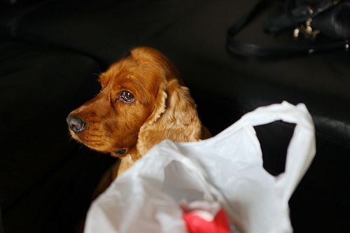

温柔的眼神。 @ Aug 31, 2011
look，已经大病痊愈的小可爱。

look，已经大病痊愈的小可爱。
LUKE：“象所有小朋友一样爱吃肯德基，尤其是吮指原味鸡块，虽然俺嘴角挂着口水，但是开饭前俺还是很有耐心与克制力的，况且吃饭这件事马虎不得，值得严肃对待。”


今天已经有人穿上了长袖，更有甚者还穿了马甲和背心。
天气的确凉爽了许多，但是有那么冷吗？

谢若林篇：
1 乱世就是舞台；
2 你看那些为官的人，嘴上全是主义，心里全是生意；
3 两根金条放在这，你告诉我拿一根是高尚的哪一根是龌龊的？
4 做生意甩开中间人那是不仗义啊？
5 如果你一枪没打死我，我又活过来了，咱俩还能做生意，只要价格公道；
6 你断人家财路，人家会断你生路的；
7 等共军进了城，你们这些歌女舞女的，都得抓去共妻。“不给钱谁共妻！”
8 这未来和平了，就没有主义了，有什么呢？只有钱。
9 怎么就人头落地，哦，我卖西瓜你嫌贵你就杀我？
10 硕果仅存的蠢货。
余则成篇：
1 一个小小的余则成就是路边的一个送行者，你看见了他，他看见了你，我们挥挥手就过去了，再往前就是更有意义的生活；
2 决定权在她手里，别人只是配合；
3 信任是一种滑稽的好感，求之却不得之；
4 我们的敌人是空气，每一个窗户后面都有一双眼睛，每一片树叶后面都有一只耳朵；
5 我们战死的时候，坟头上是鲜花还是狗屎？
6 我没什么信仰，如果说有的话，我信仰良心，信仰生活；
7 做梦也要有纪律；
8 不肖则成，今日大婚，只能掌灯夜烛，无三叩九拜谢恩列位尊堂，无花酒饭菜招待各位乡亲父老，无凤冠霞佩装扮新娘，这一切实属无奈；
9 翠平同志，你不能再抽烟袋了，那样容易暴露；
10 战斗就要打响了，你会回家喂锗吗？
11 老夫老妻照章办事就是了，身体还是党国的。
吴站长篇：
1 躲躲躲，都躲到这儿来了！你们是大肥猪怕宰是不是？
2 蒋宋孔陈家里有多少钱啊，所以他们愿意革命。咱革命是为什么呀？
3 你都长皱纹了，就跟我前列腺经常造反一样。
4 吴：凝聚意志，保卫领袖，这八个字我研究了十五年呢！余：您研究出什么结果了？吴：结果就是人不为己，天诛地灭！
5 本来想露脸，结果把屁股露出来了。
6 不为那点特权，谁愿当官儿啊！
7 把你的脑袋从脚后跟里拿出来再用一次吧！草鸡头上插凤毛，还巡查员呢！
8 活着，过生活！
9 神奇的一跳，正好跳在我的神经上。有点牙疼。
10 没有人情的政治是短命的政治；
11 你们这两个是可以进博物馆的蠢货；
12 时间就像一头野驴，跑起来就不停。
13 所信者听也，而听犹不可信。
有人在美国花费3万美元生子，有人在HK花费8万人民币生子。今儿新闻里说，父母双方为大陆常驻户口，即使在海外生二胎，也算作超生，罚款25万。武进一户家庭已被处罚。
新闻报道江浦某街道负责拆迁等工作的副主任，被人举报，擅自更改房屋结构。也就是装修过程中，将空间高的房间分隔成多层使用。
从出生到房屋装修问题，貌似所有的曲折人生，无非是路遇一个又一个小人儿，且没能越过或躲过（当然最终还是会过去）。销售的重点是搞定人，人生的重点貌似也是搞定人，不是搞定自己，就是搞定别人。
展会的征样用了三天时间梳理，总算安排下去，然后轮到我去讨债了。象我这样同时征样的还有6、7个同事，分管不同产品，怎么想都是一份庞大的样品单。每年都有展会，那些展会上的样品回来后不知去处。没有任何交接，于是界界展会需要重新打样，支付样品费，浪费不少。同样的问题也存在于，同一岗位替换人时没有工作上的交接，翻单根据程序记录在做，品描时有备的驴头不对马嘴，出货常与备货不符。这些最基本的业务资料支离破碎，客牌产品没有规范的档案，人走了，倒过来去问供货商，靠个人建立产品档案，不靠谱，真不知道公司究竟在管理什么？销售不知道自己卖的产品，天马行空的询价，暴露的破绽是他就是一个翻译，传话筒。那些个业务上发展不错的销售，但凡都是对产品有认知，对市场有感知，对业务有想法的人。凭运气做业务，一时尚可，长久以往，运气总要用完，上苍也不会总是眷顾同一个人。
前几天有人对我说：＂你去跟谁谁说一下，你要的比觉急，跟ta打个招呼。。。＂＂有没有搞错？为什么要去打招呼？工作安排下去，还要人情去促动一把才能按时做完?＂这也是体制下很奇怪地现象。只能说同一屋檐下，每个人的压力不同，有客观压力，有来自个人自身的压力，有压力不是坏事，一个员工有压力，最基本地说明了一点：ta珍惜这份工作。反之则不然。
这两天睡眠不好，难入眠，醒的早，夜里多梦。贴一百张面膜，不如睡一夜饱觉美容。周末有人问了一个有意思的问题：＂如果让你在xx和购物之间选择，你会选择什么？＂我想问嫩们tb就不算购物了吗？蔡蔡说地好：＂我们平时太辛苦，就要痛痛快快买点东西犒劳自己。＂
over.
秋天周末就到了。
周末下雷暴雨之前，打扫了露天阳台，修剪疯长的植物。
雨后干净清爽，薄荷长出细密的白色花朵。

***餐桌附近坐了一桌同样就餐的顾客，六人，有男有女，定睛再看，是六女。四人李宇春翻版，两妖娆女孩。饭毕，三两合影拍照，相互亲吻，是否舌吻不知道，公众下同性间的亲密行为，着实令四座震惊，现在的孩子活得真有个性。我感觉在看偶像剧。。。
***如若下班早到家遛狗，时而看到两着棉麻衣裙的年轻女子在打羽毛球。今儿才想起周末傍晚遇到过她俩，提一水桶摇曳走过，不久两人摇曳返回，桶里装满黄瓜，手中亦拿着边走边吃，仿佛刚从田间采摘而归。她们象从某个不识人间烟火之处走来，沉浸在自我世界中。
***到家开门，红土沉香的盒子被土豆撕啃的支离破碎，残片躺在沙发上，盘香散落四处。。。土豆躲避恐惧的方法是。。。不看我。
***晚上睡觉了，好友关了大灯，她的女儿小满问：＂为什么要关灯啊？太黑了。＂妈妈说：＂你一会儿就适应了。＂＂什么？＂＂你一会儿就适应了。＂＂什么啊？＂妈妈换了个词，＂你一会儿就习惯了。＂快要上幼儿园的小满完全不能理解＂适应＂和＂习惯＂的意思，＂妈妈，我听不懂啊。＂。。。换了你，你会怎么用词？
7月初去港一眼相中Mulberry2011秋冬新款"Polly Push Lock"包包，分大中小三种规格，入手中号紫红色，牛皮压花，大大的金属扣方便拿取东西。没选择Alexa款的原因是正反面皮质不一，且Alexa款2010年过于流行，仿品也很多，跟风无趣。7月，英国王妃凯特·米德尔顿(Kate Middleton)与威廉王子一起现身英国希斯罗机场， 手上拎的正是"Polly Push Lock"黑色款。

特别喜欢这条裹胸裙，真丝里面连着小胸衣，顶端一圈有防滑条，胸衣左边一排细密的挂钩，上下有竖型的撑子，里面束紧了，外面的面料还平整舒展着，细节上的设计考虑很周到。有感于某些服装厂家，只做了个表面的款式，如能更多的为穿衣服的人多些周到、人性化的考虑，会更好一些。